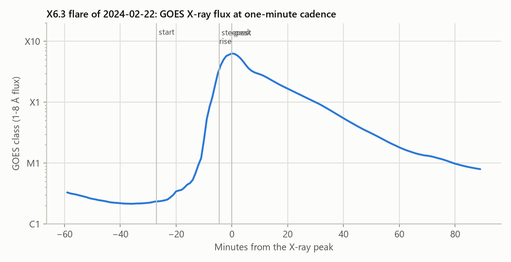

Fulguraciones de GOES¶
La lista de fulguraciones dice cuándo empezó y cuándo alcanzó su máximo cada una, lo intensa que fue y en qué lugar del disco ocurrió. Procede de los sensores de rayos X (XRS) de los satélites meteorológicos GOES-R, que miden sin interrupción el flujo de todo el Sol en la banda de 1 a 8 Å.
Qué son los datos¶
Una fulguración se clasifica por su flujo máximo en esa banda: la clase M empieza en 10⁻⁵ W m⁻² y la clase X en 10⁻⁴ W m⁻², de modo que una X2.8 alcanza 2,8 × 10⁻⁴ W m⁻².
Se usan tres productos de calidad científica de NOAA/NCEI, todos públicos:
| Producto | Contenido | Tamaño |
|---|---|---|
xrsf-l2-flsum_science |
Un registro por cada marca (inicio, máximo, final) de cada fulguración | 6 MB por satélite |
xrsf-l2-flloc_science |
Posición de cada fulguración en el disco | 0,6 MB por satélite |
xrsf-l2-avg1m_science |
Flujo de rayos X del Sol cada minuto | 48 MB por satélite y año |
Están en
https://data.ngdc.noaa.gov/platforms/solar-space-observing-satellites/goes/goes16/l2/data/
(y goes18). GOES-16 cubre de febrero de 2017 a abril de 2025 y GOES-18 desde junio de 2022.
Un ejemplo¶
Cuatro de las fulguraciones del 21 y 22 de febrero de 2024, tal como las lee flinch:
| Inicio (UT) | Subida más rápida | Máximo | Final | Clase | Fluencia (J m⁻²) | x | y | Satélite |
|---|---|---|---|---|---|---|---|---|
| 2024-02-21 22:52 | 23:04 | 23:06 | 23:13 | X1.8 | 0,098 | −0,60 | +0,34 | 16 |
| 2024-02-21 23:58 | 00:03 | 00:13 | 00:30 | M1.5 | 0,026 | −0,81 | −0,44 | 16 |
| 2024-02-22 06:17 | 06:30 | 06:32 | 06:38 | X1.6 | 0,087 | −0,55 | +0,34 | 16 |
| 2024-02-22 20:28 | 20:41 | 20:46 | 21:01 | M4.8 | 0,053 | −0,46 | +0,36 | 16 |
x e y son la posición en el disco en unidades del radio solar, con x positivo hacia el
limbo oeste, el que se aleja de nosotros.
El flujo minuto a minuto de la fulguración X6.3 del 22 de febrero de 2024, la más intensa del disco en la muestra:

Qué se espera de ellos¶
| Magnitud | Por qué importa |
|---|---|
| Instantes de inicio y de máximo | Sitúan las ventanas en las que se miden la velocidad y el espectro. |
| Subida más rápida | Marca la fase impulsiva, cuando las partículas aceleradas calientan la baja atmósfera. El máximo en rayos X llega después: 3,5 minutos en la mediana, hasta 10. |
| Clase (flujo máximo) | Una respuesta debería crecer con el tamaño de la fulguración, así que el flujo es el peso de las estimaciones escaladas. |
| Posición | Una mancha brillante sobre un disco que gira desplaza la velocidad con el signo de su lado: negativo en el este, positivo en el oeste. La posición convierte una media nula en una prueba con signo. |
Cómo se procesan¶
- Una fila por fulguración. El archivo resumen tiene un registro por marca; los registros
se emparejan por su
flare_iden inicio, máximo y final. Una fulguración en curso al acabar el archivo no tiene final. - Posiciones. El archivo de posiciones se une por
flare_id. La posición helioproyectiva en segundos de arco se divide por el radio solar de ese día. - Dos satélites, una lista. GOES-16 es la lista principal. Una fulguración de GOES-18 se añade solo cuando su máximo está a más de 3 minutos de todos los máximos de GOES-16 y no cae entre el inicio y el final de una fulguración de GOES-16. Así se rellenan los huecos de GOES-16 y se continúa la lista desde abril de 2025. La lista unida tiene 21 459 fulguraciones de todas las clases.
- Instante impulsivo. La subida más rápida es el máximo de la diferencia centrada del flujo minuto a minuto entre el inicio y el máximo.
Las funciones están en flinch.goes.
Advertencias¶
- La clase depende del satélite al nivel de unos pocos por ciento: la mayor fulguración de mayo de 2024 es X8.6 para GOES-16 y X8.5 para GOES-18.
- Las posiciones salen del propio sensor de rayos X (un diodo de cuadrantes), no de una imagen. No son fiables para fulguraciones débiles; para las M y X, el 98 % cae a menos de 1,05 radios solares. La longitud y la latitud heliográficas no se dan en el limbo.
- Eje de tiempos. Los tiempos son segundos desde el 1 de enero de 2000 a las 12:00 UTC sin segundos intercalares, lo que reproduce los instantes de las fulguraciones al minuto. Una ambigüedad de 5 s no importaría frente a exposiciones de 55 s.
- Escala de las clases. Los flujos de los satélites anteriores a GOES-16 se daban multiplicados por 0,7. Las fulguraciones de septiembre de 2017, que registraron las dos generaciones de satélites, son entre 1,4 y 1,6 veces mayores en la lista de aquí. Las catalogadas como X9.3 el 6 de septiembre y como X8.2 el 10 de septiembre son aquí X14.6 y X12.9.